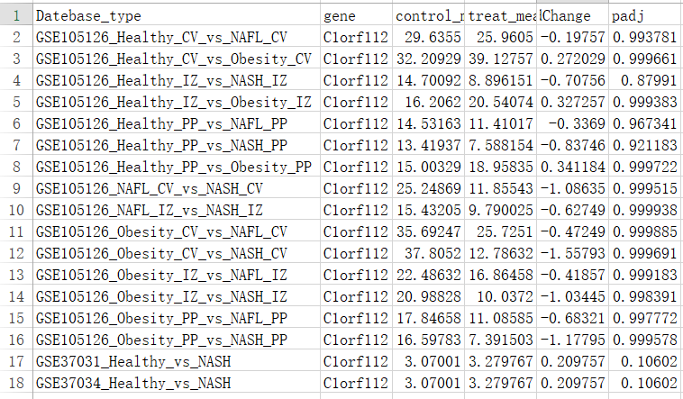
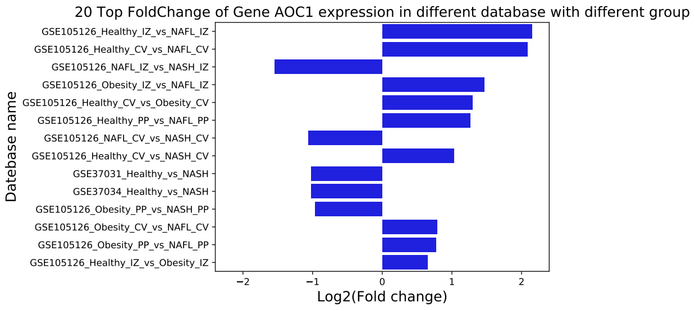

数据格式如下

这里选择fold值最大的前20个作图进行展示
代码如下
import seaborn as sns
import pandas as pd
import numpy as np
import matplotlib.pyplot as plt
infpkm="gene_diff2019102206.xls"
genename="Aoc1"
picpathname="Aoc1.test"
df = pd.read_csv(infpkm,header=0,sep="\t")
#根据绝对值大小从大到小进行排序
df = df.reindex(df['log2FoldChange'].abs().sort_values(ascending=False).index)
#取前20行
df = df.iloc[:20,:]
#获取最大的fold绝对值作为x轴的上下限
txlim = np.abs(df.loc[:,'log2FoldChange'].tolist()[0])
#获取作图的两列
pre_draw=df[['Datebase_type','log2FoldChange']]
#选择绝对值大于0.58496的数据
pre_draw = pre_draw[np.abs(pre_draw['log2FoldChange'])>0.58496]
#将所有绝对值大于3的整数设置3，绝对值大于3的负数，设置为-3
#df[np.abs(df)>3] = np.sign(df)*3
logfold = [float(n) for n in pre_draw['log2FoldChange'].tolist()]
ngroup = [str(n) for n in pre_draw['Datebase_type'].tolist()]
ax = sns.barplot(x=logfold, y=ngroup, color='blue', orient='h')
ax.set_title('20 Top FoldChange of Gene '+str(genename)+' expression in different dataset', fontsize=15)
ax.set_ylabel('Datebase name', fontsize=15)
ax.set_xlabel('Log2(Fold change)', fontsize=15)
ax.set_xlim([-txlim-0.25, txlim+0.25])
plt.savefig(picpathname+'.png', format='png', dpi=50, bbox_inches='tight')
plt.savefig(picpathname+'.pdf', format='pdf', dpi=100, bbox_inches='tight')图片效果如下：
